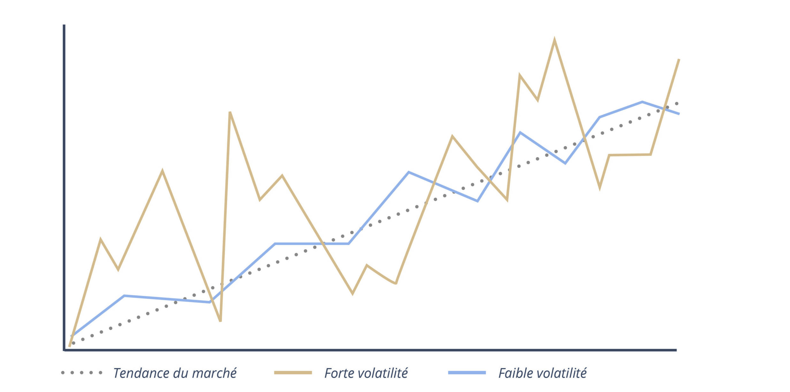

Pour continuer ce chapitre sur les actions, nous devons tuer un mythe qui paralyse 90% des gens.
Si vous demandez à votre banquier ou à vos parents : "La bourse, est-ce risqué ?", ils vous répondront en chœur : "Oui, c'est très risqué, regarde, ça monte et ça descend tout le temps !"
Ils commettent une erreur de définition grave. Ils confondent la Volatilité et le Risque. Ce sont deux choses totalement différentes.
1. La Volatilité : Le prix à payer pour la richesse 🎟️

La volatilité, c'est simplement le fait que le prix bouge. Parfois brutalement. C'est le "bruit" du marché à court terme.
Il faut changer votre état d'esprit : La volatilité n'est pas un défaut, c'est une fonctionnalité.
Pourquoi la Bourse rapporte-t-elle 10% par an en moyenne alors que le Livret A rapporte 3% ? Précisément parce que c'est volatil. Si la Bourse était une ligne droite tranquille, tout le monde y mettrait son argent, et le rendement s'effondrerait.
La volatilité est la taxe émotionnelle ou le prix d'entrée que vous devez payer pour accéder à la performance supérieure. Si vous ne supportez pas de voir votre portefeuille faire -10% temporairement, vous ne méritez pas de le voir faire +100% durablement.
L'Analogie de l'Avion ✈️
Imaginez que vous prenez un vol Paris-New York.
🔹 La Volatilité : Ce sont les turbulences. L'avion bouge, le café se renverse, vous avez peur. C'est désagréable. Mais à la fin, l'avion atterrit bien à New York. Vous êtes arrivé à destination (votre objectif financier).
🔹 Le Risque : C'est le crash. L'avion s'écrase et ne redécolle plus jamais. Vous avez tout perdu.
2. Le Risque : La perte permanente ☠️
Le vrai risque pour un investisseur, ce n'est pas que le prix bouge. C'est la perte définitive du capital.
Cela arrive quand :
- L'entreprise fait faillite (Valeur = 0€).
- Le business model est détruit et ne reviendra jamais (ex: Kodak, Nokia).
- Vous paniquez et vous vendez au pire moment (vous validez la perte).
Soyons clairs : En tant qu'investisseurs dans des actions, notre but absolu est de limiter ce risque au maximum en choisissant des entreprises solides comme le roc. Cependant, le risque est inévitable dès lors qu'on investit en actions. Le "risque zéro" n'existe pas en Bourse. Accepter une part de risque est la condition sine qua non pour espérer du rendement.
3. L'outil pour mesurer la volatilité : Le Bêta 📐
Sur les sites financiers, vous verrez souvent une ligne mystérieuse appelée "Bêta". C'est l'indicateur qui mesure la volatilité d'une action par rapport au marché (souvent le S&P 500).
Le marché (l'indice de référence) a par définition un Bêta de 1.
- beta = 1 : L'action bouge exactement comme le marché. (Si le marché fait +2%, l'action fait +2%).
- beta > 1 (ex: 1.5) : L'action est plus volatile (agressive). Si le marché monte de 10%, l'action montera probablement de 15%. Mais si le marché baisse de 10%, elle chutera de 15%. (Ex: Tesla, Nvidia).
- beta < 1 (ex: 0.5) : L'action est moins volatile (défensive). Si le marché s'effondre, elle baissera moins fort. C'est l'amortisseur. (Ex: Coca-Cola, Walmart).
4. L'Approche Quality : Accepter l'un pour éviter l'autre 🛡️
Une entreprise comme LVMH ou Microsoft est volatile. Si une crise arrive, son action peut baisser de -20% temporairement. C'est normal.
Mais est-elle risquée ? Probabilités de faillite quasi-nulles. Trésorerie de guerre. Avantage concurrentiel immense. Elle remontera.
À l'inverse, une "Penny Stock" spéculative est risquée. Si elle baisse de -90%, il est fort possible qu'elle ne remonte jamais.
🔑 Ce qu'il faut retenir
Ne fuyez pas la volatilité. Embrassez-la.
La volatilité est le prix à payer pour s'enrichir. Si vous voulez 0 volatilité, laissez votre argent sur un compte courant (et appauvrissez-vous face à l'inflation).
En tant qu'investisseur, votre but est de minimiser le Risque (faillite) en choisissant la Qualité, tout en acceptant la Volatilité (les secousses) avec philosophie.